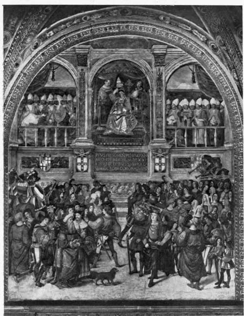

The Reigns Of Sixtus IV And Innocent VIII. Part 4
Description
This section is from the book "The Life Of Cesare Borgia", by Rafael Sabatini. Also available from Amazon: The Life of Cesare Borgia.
The Reigns Of Sixtus IV And Innocent VIII. Part 4
Open war was the only bolt remaining in the papal quiver, and open war he declared, preluding it by a Bull of Excommunication against the Florentines. Naples took sides with the Pope. Venice and Milan came to the support of Florence, whereupon Milan's attentions were diverted to her own affairs, Genoa being cunningly set in revolt against her.
In 1480 a peace was patched up ; but it was shortlived. A few months later war flared out again from the Holy See, against Florence this time, and on the pretext of its having joined the Venetians against the Pope in the late war. A complication now arose, created by the Venetians, who seized the opportunity to forward their own ambitions and increase their territories on the mainland, and upon a pretext of the pettiest themselves declared war upon Ferrara. Genoa and some minor tyrannies were drawn into the quarrel on the one side, whilst on the other Florence, Naples, Mantua, Milan, and Bologna stood by Ferrara. Whilst the papal forces were holding in check the Neapolitans who sought to pass north to aid Ferrara, whilst the Roman Campagna was being harassed by the Colonna, and Milan was engaged with Genoa, the Venetians invested Ferrara, forced her to starvation and to yielding point. Thereupon the Pope, perceiving the trend of affairs, and that the only likely profit to be derived from the campaign would lie with Venice, suddenly changed sides that he might avoid a contingency so far removed from all his aims.
Coronation Of Pope Pius II (ENEA SILVIO PICCOLOMINI) (From the fresco by Pinturicchio.)
He made a treaty with Naples, and permitted the Neapolitan army passage through his territories, of which they availed themselves to convey supplies to Ferrara and neutralize the siege. At the same time the Pope excommunicated the Venetians, and urged all Italy to make war upon them.
In this fashion the campaign dragged on to every one's disadvantage and without any decisive battle fought, until at last the peace of Bagnolo was concluded in August of 1484, and the opposing armies withdrew from Ferrara.
The news of it literally killed Sixtus. When the ambassadors declared to him the terms of the treaty he was thrown into a violent rage, and declared the peace to be at once shameful and humiliating. The gout from which he suffered flew to his heart, and on the following day August 12, 1484 he died.
Two things he did during his reign to the material advantage of the Church, however much he may have neglected the spiritual. He strengthened her hold upon her temporal possessions and he enriched the Vatican by the addition of the Sistine Chapel. For the decoration of this he procured the best Tuscan talent of his day and of many days and brought Alessandro Filipeppi (Botticelli), Pietro Vannuccio (II Perugino), and Domenico Bigordi (II Ghirlandajo) from Florence to adorn its walls with their frescoes.1
1 The glory of the Sistine Chapel, however, is Michelangelo's " Last Judgement," which was added later, in the reign of Pope Julius II (Giuliano della Rovere).
In the last years of the reign of Pope Sixtus, Cardinal Roderigo's family had suffered a loss and undergone an increase.
In 1481 Vannozza bore him another son Giuffredo Borgia, and in the following year died his eldest son (by an unknown mother) Pedro Luis de Borgia, who had reached the age of twenty two and was betrothed at the time of his decease to the Princess Maria d'Aragona.
In January of that same year, 1482, Cardinal Roderigo had married his daughter Girolama now aged fifteen to Giovanni Andrea Cesarini, the scion of a patrician Roman house. The alliance strengthened the bonds of good feeling which for some considerable time had prevailed between the two families. Unfortunately the young couple were not destined to many years of life together, as in 1483 both died.
Of Cesare all that we know at this period is what we learn from the Papal Bulls conferring several benefices upon him. In July 1482 he was granted the revenues from the prebendals and canonries of Valencia ; in the following month he was appointed Canon of Valencia and apostolic notary. In April 1484 he was made Provost of Alba, and in September of the same year treasurer of the Church of Carthage. No doubt he was living with his mother, his brothers, and his sister at the house in the Piazza Pizzo di Merlo, where an ample if not magnificent establishment was maintained.
By this time Cardinal Roderigo's wealth and power had grown to stupendous proportions, and he lived in a splendour well worthy of his lofty rank. He was now fifty three years of age, still retaining the air and vigour of a man in his very prime, which, no doubt, he owed as much as to anything to his abstemious and singularly sparing table habits. He derived a stupendous income from his numerous abbeys in Italy and Spain, his three bishoprics of Valencia, Porto, and Carthage, and his ecclesiastical offices, among which the Vice-Chancellorship alone yielded him annually eight thousand florins.1
Volterra refers with wonder to the abundance of his plate, to his pearls, his gold embroideries, and his books, the splendid equipment of his beds, the trappings of his horses, and other similar furnishings in gold, in silver, and in silk. In short, he was the wealthiest prince of the Church of his day, and he lived with a magnificence worthy of a king or of the Pope himself.
Of the actual man, Volterra, writing in 1586, says : " He is of a spirit capable of anything, and of a great intelligence. A ready speaker, and of distinction, notwithstanding his indifferent literary culture; naturally astute, and of marvellous talent in the conduct of affairs."
In the year in which Volterra wrote of Cardinal Roderigo in such terms Vannozza was left a widow by the death of Giorgio della Croce. Her widowhood was short, however, for in the same year on June 6 she took a second husband, possibly at the instance of Roderigo Borgia, who did not wish to leave her unprotected ; that, at least, is the general inference, although there is very little evidence upon which to base it. This second husband was Carlo Canale, a Mantovese scholar who had served Cardinal Francesco Gonzaga in the capacity of chamberlain, and who had come to Rome on the death of his patron.
Continue to:
- prev: The Reigns Of Sixtus IV And Innocent VIII. Part 3
- Table of Contents
- next: The Reigns Of Sixtus IV And Innocent VIII. Part 5